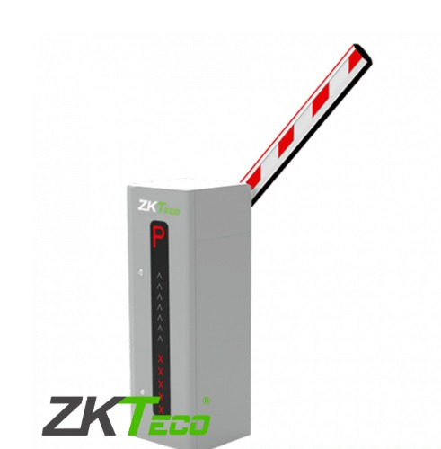

1. BARRERA VEHICULAR 4.5 M REVERSIBLE
Control de acceso perfecto para garantizar la seguridad en empresas o comunidades.
Nuevo Ver detalles

2. BARRERA VEHICULAR 4.5M. 2.5SEG C-LED CABINA DERECHA
Ideal para garantizar la seguridad y control de acceso en negocios.
Ver detalles
3. BARRERA VEHICULAR 6M
Solución perfecta para proteger propiedades de forma eficiente y segura.
Ver detalles4. BARRERA VEHICULAR ARTICULADA ALTO TRAFICO DERECHO
Perfecta para proteger propiedades de vehículos no autorizados.
Ver detalles5. LECTOR LARGO ALCANCE UHF 20MTS
Solución ideal para proteger y garantizar la seguridad en hogares.
Tecnología Ver detalles6. LECTOR LARGO ALCANCE UHF PRO 20MTS EXTERIOR
Perfecto para garantizar la seguridad con distancia de lectura hasta 20 metros.
Tecnología Ver detalles7. TAG STICKER VEHICULAR UHF 860MHZ
Ideal para sistemas de control de acceso y monitoreo de vehículos.
Accesorio Ver detalles